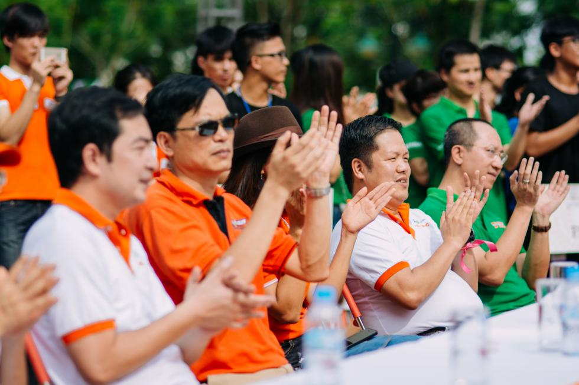
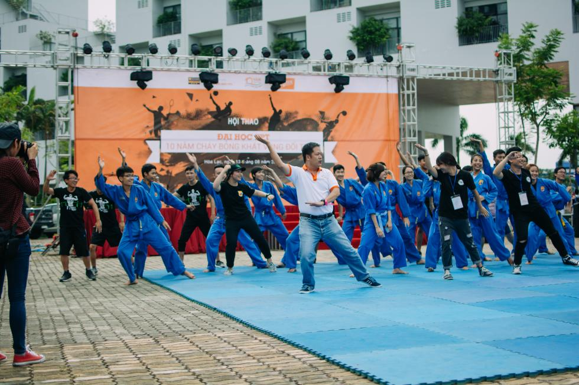
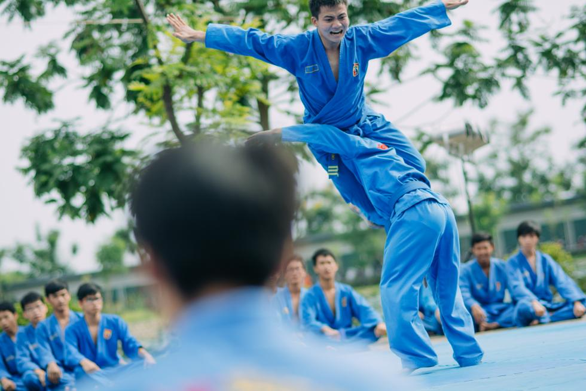
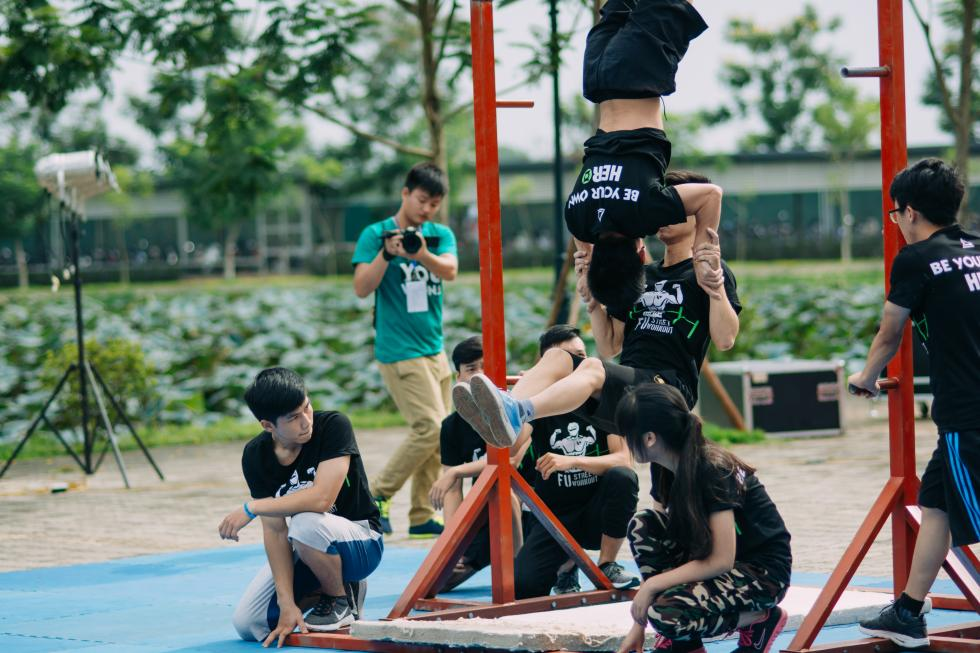
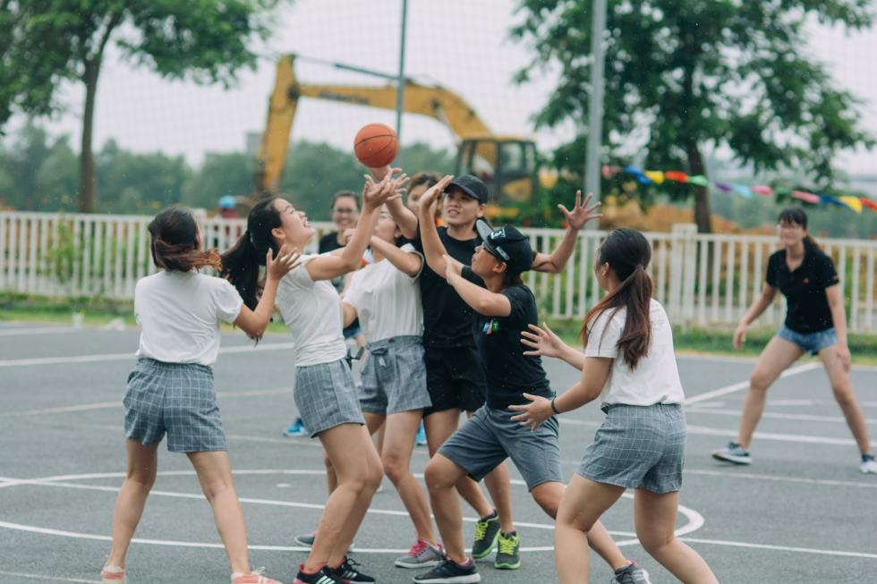
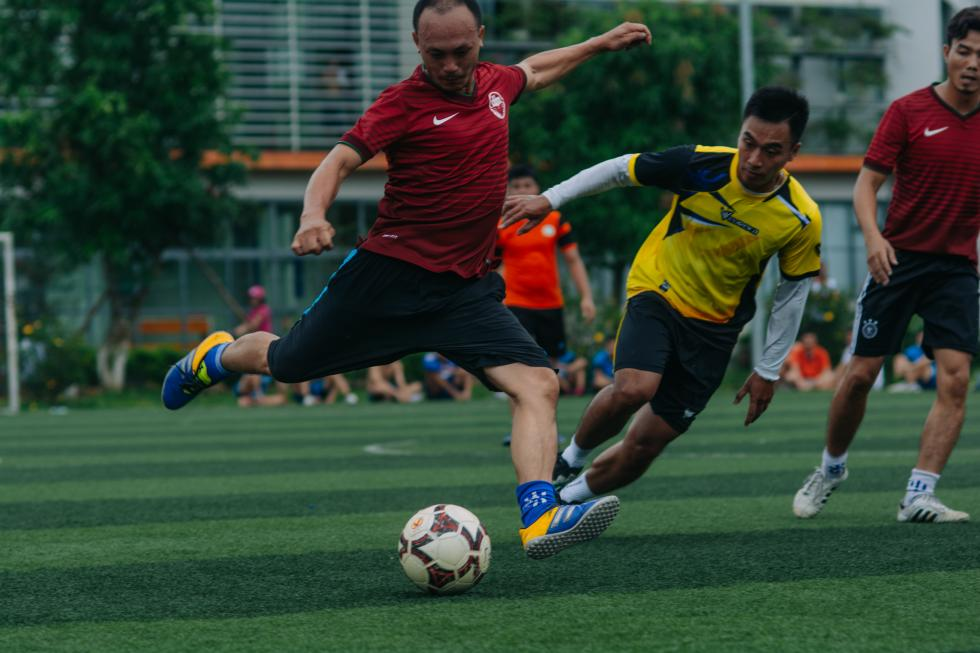
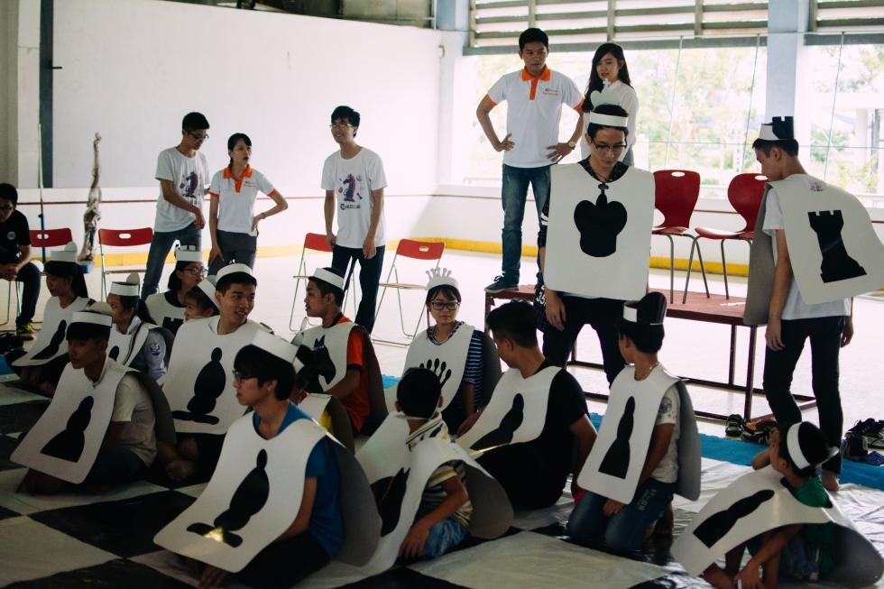
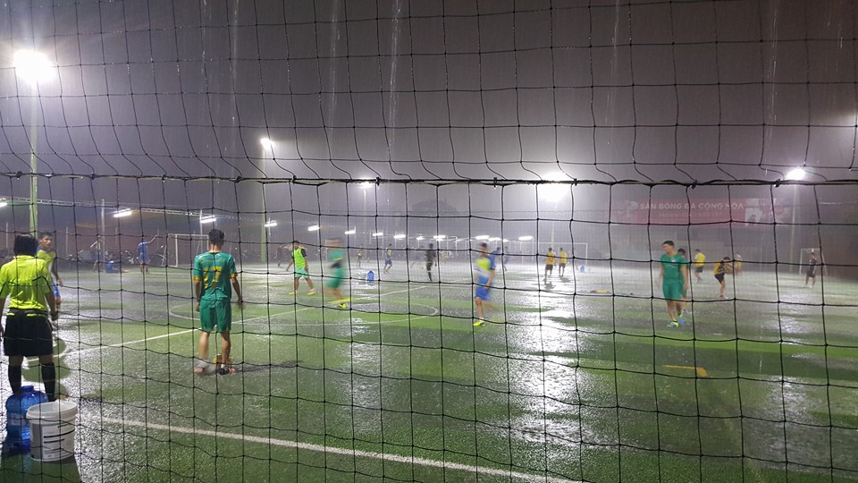

Hội thao 10 năm – chương trình đánh dấu chặng đường 10 năm khát vọng
Hội thao 10 năm – chương trình đánh dấu chặng đường 10 năm cháy bỏng khát vọng đổi thay, một chặng đường phát triển và đổi mới không ngừng của trường Đại học FPT cùng 11 lứa sinh viên đã thay nhau đến, đi và cống hiến.
Tại cơ sở Hòa Lạc của Đại học FPT, chương trình đã diễn ra vào ngày 13/8 vừa qua. Sự kiện vừa là nơi trổ tài thi đấu của cán bộ giảng viên, sinh viên đang học và làm việc tại FPT, vừa là ngày hội “về nhà” – homecoming dành cho cựu sinh viên. Chương trình kéo dài từ 7h00 đến 23h00 với những môn thể thao và trò chơi tập thể hấp dẫn cùng đêm nhạc hòa âm ánh sáng có sự góp mặt của các DJ
Tham gia chương trình có sự góp mặt của thầy Nguyễn Khắc Thành (Phó tổng giám đốc Tập đoàn FPT), thầy Đàm Quang Minh (Hiệu trưởng ĐH FPT) cùng toàn thể giảng viên và sinh viên, cựu sinh viên đến từ Khối giáo dục FPT, đặc biệt là hơn 300 vận động viên về tranh tài tại hội thao.
Tại buổi lễ khai mạc Hội thao, thầy Đàm Quang Minh cho biết đây chính là ngày hội để người FPTU có thể sẻ chia niềm vui 10 năm thành lập của trường, dù 10 năm không phải là một chặng đường dài nhưng đây chính là một giai đoạn đánh dấu những tiềm năng phát triển vượt bậc trong tương lai của FPTU.
Cùng góp vui tại buổi lễ là những màn trình diễn võ thuật vô cùng độc đáo của sinh viên FPTU đến từ CLB Vovinam (FVC). Vovinam luôn là một món ăn đặc sản, một món ăn tinh thần đặc biệt đối với người FPTU. Thông qua những bài đồng diễn, biểu diễn cá nhân ở nội dung song luyện mã tấu, nhật nguyệt đại đao pháp, tự vệ nữ giới… FVC đã để lại nhiều ấn tượng về sức mạnh và sự dẻo dai.
Để lại chương trình nhiều dấu ấn là CLB Street Workout với những bài diễn dứt khoát nhưng vô cùng gay cấn. Đây là một môn thể thao mới, trẻ nhưng "được lòng" sinh viên FPT bởi lợi ích nâng cao sức khoẻ cũng như vóc dáng của người tham gia.
Hội thao là nơi tranh tài của hàng trăm vận động viên không phân biệt tuổi tác và chức vụ, chỉ cần là người FPTU đều có thể tham gia. Ở nội dung bóng sọt, cán bộ trường ĐH FPT cùng sinh viên và học sinh THPT đã góp nên những màn thi đấu vô cùng kịch tính.
Bóng đá nam là nơi thu hút nhiều cổ động viên nhất. Lúc học, thầy là người dạy, trò là người theo học nhưng lúc thi đấu, tất cả đều bình đẳng. Trên sân bóng, mọi người đều đặt tinh thần thể thao lên trên hết và cũng không thiếu những pha bóng đẹp mắt.
Ở bộ môn Cờ vua, với hình thức thi đấu cờ người mang lại nhiều sự mới mẻ khi đây là môn thi đấu thể thao trí tuệ duy nhất. Những trận đấu đều có hàm lượng chất xám rất cao khi vận động viên thi đấu hoặc là những kỳ thủ đã được tuyển chọn từ CLB Cờ, trường ĐH FPT hoặc là những cán bộ yêu thích cờ vua đến từ Khối giáo dục FPT.
Vovinam là nơi tập trung nhiều VĐV nhất. Đây được coi như một ngày hội Cóc Vương thứ hai khi không khí thi đấu rất quyết liệt, VĐV có chuyên môn và kỹ thuật tốt. Là sinh viên khóa 5 về trường, tham dự giải đấu Vovinam nhân kỷ niệm 10 năm thành lập, Vũ Đình Đồng đã có những chia sẻ rất chân thành: “Mình rất vui và bồi hồi khi được gặp lại tất cả các thầy cô, bạn bè cũng như anh chị tại các phòng ban. Đây cũng là dịp để mình hội ngộ với những người bạn cùng lớp đã lâu không gặp. Tham gia giải đấu Vovinam lần này, có một điều nằm ngoài dự tính của mình là khi bốc thăm lại rơi vào cảnh “anh em trong nhà đánh nhau”, song mình và các anh em trong Câu lạc bộ FVC đã xác định mục tiêu cọ xát là chính nên tinh thần rất thoải mái. Đội của mình đặt mục tiêu sẽ đi đến trận chung kết”.
Những cúp thể thao đã được trao cho những VĐV đến từ nhiều cơ sở giáo dục của khối FPT. Với kết quả nhất lần lượt là FPT Polytechnic, ĐH FPT, THPT FSchool. Hội thao đã để lại nhiều dư âm tốt đẹp và thông điệp: muốn học tập tốt bạn phải có một cơ thể khỏe mạnh.
Phạm Minh Đức, cựu sinh viên khóa 7 ngành Kỹ sư cầu nối Nhật Bản (JS) đang làm việc tại FSoft cho biết: “Khi về FPTU, khi được hòa vào bầu không khí sôi động như thế này thì mình nhớ về những ngày tháng sinh viên rất nhiều. Đây là một ngày hội rất ý nghĩa. Nhất là đối với buổi đêm hòa âm ánh sáng đã để lại rất nhiều ấn tượng đối với mình. Bia ngon, nhạc hay, sức trẻ dồi dào, chúng mình quẩy hết mình không cần biết mưa to cản trở. Cám ơn FPTU đã tổ chức một ngày hội đầy ý nghĩa như thế này!”
Đêm nhạc hòa âm ánh sáng cùng với nhiều tiết mục bùng cháy giữa đêm mưa lớn kéo dài đến tận đêm khuyaNằm trong chuỗi sự kiện kỷ niệm 10 năm thành lập FPTU, trước đó, tại TP. Hồ Chí Minh, hội thao cũng đã diễn ra vào ngày 29/7 tại sân A230, quận Gò Vấp, TP.HCM. Trong chương trình, giảng viên, cán bộ và sinh viên các khối đã có cơ hội tham gia vào các trò chơi vận động như bóng đá, cầu long, bowling… Chia sẻ về Hội thao tại TP. Hồ Chí Minh , bạn Tuấn Em (Sinh viên FUG), chủ nhiệm CLB Bóng đá ĐH FPT, cho biết: “ Giải đấu mang tới cho em rất nhiều cảm xúc, từ bất ngờ, hấp dẫn, đến tiếc nuối. Hấp dẫn là khi được chứng kiến các trận đấu hay, gây cấn và đặc biệt là các trận đấu có sự tham gia của cựu sinh viên khoá 4, bất ngờ là các đội bóng mạnh yếu đều rất khó đoán được và tiếc nuối khi đội mình đã để thua 2 trận đấu đầu với tỉ số sát nút”.
 Rất nhiều sinh viên Đại học FPT ở TP. Hồ Chí Minh đã hào hứng tham gia sự kiện này.Hội thao kỉ niệm 10 năm thành lập FPTU đã diễn ra thành công tại Hà Nội và TP. Hồ Chí Minh, là kết thúc của mở đầu mới, mở đầu một khát vọng với những đổi thay ngày càng rực rỡ hơn.